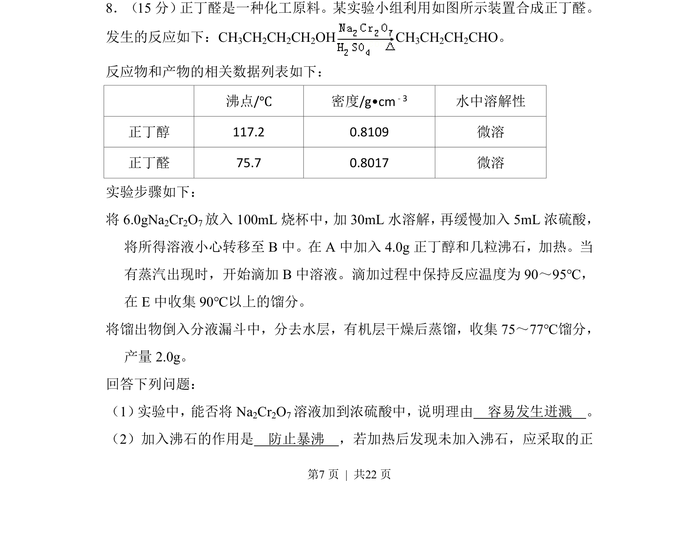
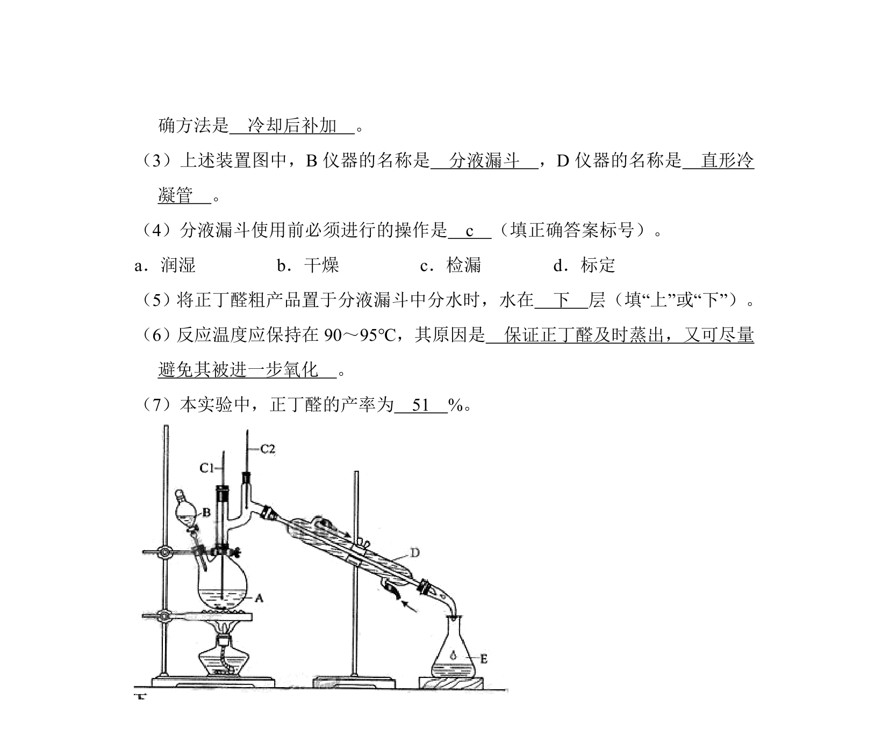
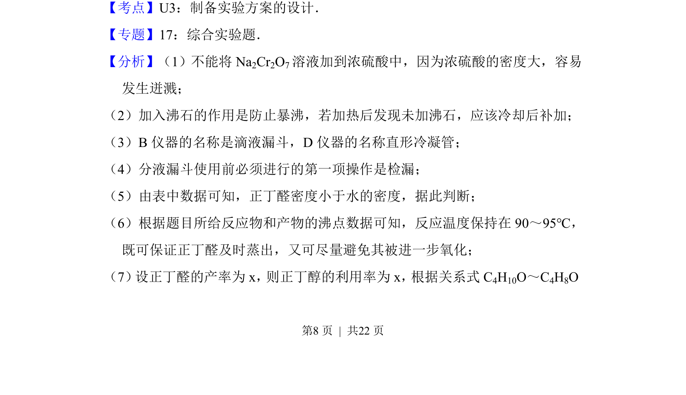
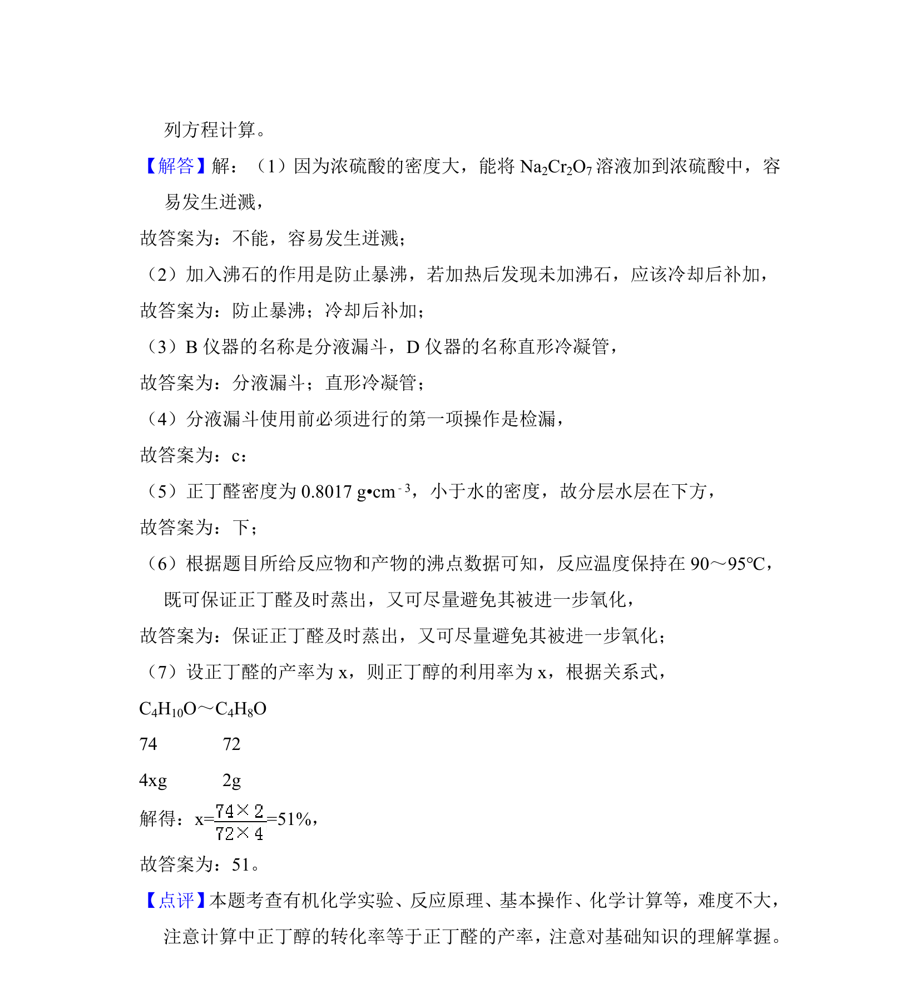

考点：浓硫酸稀释操作 防暴沸 蒸馏 分液
浓硫酸稀释操作
防暴沸
蒸馏
分液


合成了正丁醛实验，考查浓硫酸稀释操作、防暴沸措施及产物分离提纯。


📄 原 PDF 第 7 页：素材/真题/吉林/2008-2024·（吉林）化学高考真题/2013年高考化学试卷（新课标Ⅱ）（解析卷）.pdf
素材/真题/吉林/2008-2024·（吉林）化学高考真题/2013年高考化学试卷（新课标Ⅱ）（解析卷）.pdf